This package contains basic mathematical functions (such as sin(..)), as well as functions operating on vectors, matrices, nonlinear functions, and Boolean vectors.
Martin
Otter and Marcus Baur
Deutsches Zentrum für Luft- und Raumfahrt e.V. (DLR)
Institut für Systemdynamik und Regelungstechnik (DLR-SR)
Forschungszentrum Oberpfaffenhofen
D-82234 Wessling
Germany
email: Martin.Otter@dlr.de
Copyright © 1998-2018, Modelica Association and DLR.
This Modelica package is free software and the use is completely at your own risk; it can be redistributed and/or modified under the terms of the 3-Clause BSD license. For license conditions (including the disclaimer of warranty) visit https://modelica.org/licenses/modelica-3-clause-bsd.
| Name | Description |
|---|---|
| Library of functions operating on vectors | |
| Library of functions operating on Boolean vectors | |
| Library of functions operating on matrices | |
| Library of functions operating on nonlinear equations | |
| Library of functions for generating random numbers | |
| 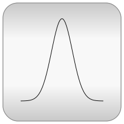 Distributions | Library of distribution functions |
| Library of special mathematical functions | |
| Library of functions for the Fast Fourier Transform (FFT) | |
| Icons for Math | |
| Determine if two Real scalars are numerically identical | |
| Determine if the integer input is a power of 2 | |
| 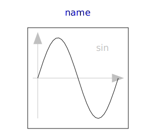 sin | Sine |
| Cosine | |
| 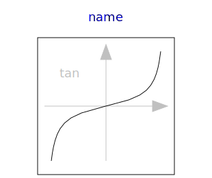 tan | Tangent (u shall not be -pi/2, pi/2, 3*pi/2, ...) |
| 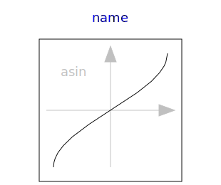 asin | Inverse sine (-1 <= u <= 1) |
| 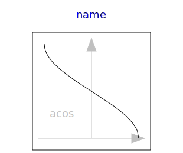 acos | Inverse cosine (-1 <= u <= 1) |
| Inverse tangent | |
| 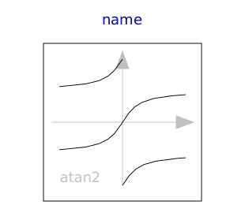 atan2 | Four quadrant inverse tangent |
| atan3 | Four quadrant inverse tangent (select solution that is closest to given angle y0) |
| 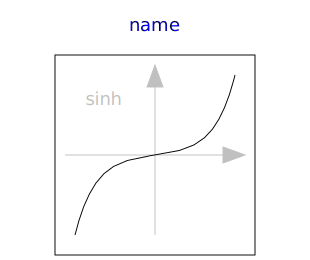 sinh | Hyperbolic sine |
| 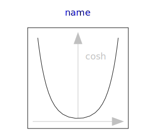 cosh | Hyperbolic cosine |
| 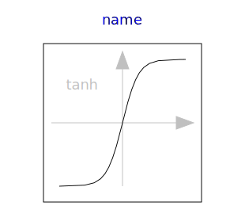 tanh | Hyperbolic tangent |
| 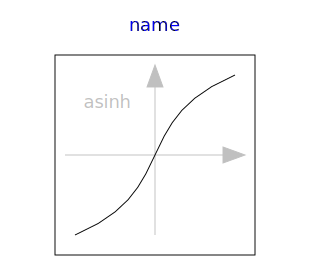 asinh | Inverse of sinh (area hyperbolic sine) |
| Inverse of cosh (area hyperbolic cosine) | |
| 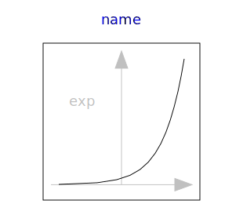 exp | Exponential, base e |
| 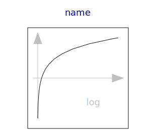 log | Natural (base e) logarithm (u shall be > 0) |
| log10 | Base 10 logarithm (u shall be > 0) |
| 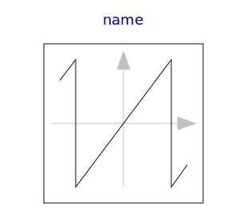 wrapAngle | Wrap angle to interval ]-pi,pi] or [0,2*pi[ |
| 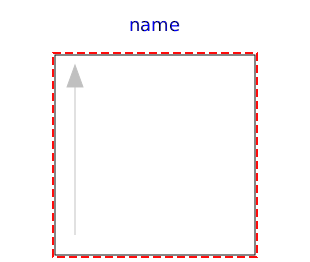 baseIcon1 | This icon will be removed in future Modelica versions, use Modelica.Math.Icons.AxisLeft instead. |
| 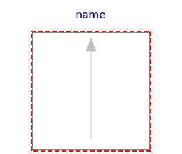 baseIcon2 | This icon will be removed in future Modelica versions, use Modelica.Math.Icons.AxisCenter instead. |
| Temporary function for linear interpolation (will be removed) | |
| Temporary function for vectorized linear interpolation (will be removed) |